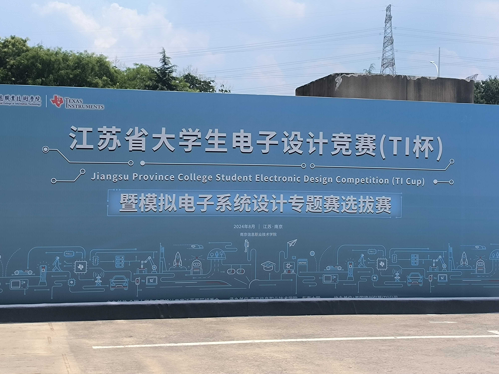

24电赛H题解题杂谈和开源工程说明¶
前言¶
། – _ – ། 整理电脑的时候也是突发奇想。把电赛代码翻出来打算开源了_(:з」∠)_这些代码在电赛最后一天，封箱后就没再动过了( ･⊝･∞)
(／_＼)这些代码陪伴了我3天，为了不至于以后闲来翻起来自己都不认得自己写的什么函数的尴尬情况发生，决定把代码和硬件接线整理整理。让解题代码逻辑和一些TI M0单片机的基本配置以及OLED，串口中断，定时器等的外设代码不至于尘封在电脑一角，也抱着也许帮助到他人的意思，将代码与硬件开源，如果你有单片机基础，将可以按照开源的内容去将复刻小车。
电赛真的很锻炼人啊(。-ω-)zzz 参加电赛为我的大学生活添加了浓墨重彩的一笔，这是大学最有意义的几件事之一，哥们也是参加过电赛的人啦！
（(ㅇㅅㅇ❀)因为我也不是电子类的专业，跟学院带电赛的老师也不熟悉，还是非常感谢老师认可能给我这个机会_(:з」∠)_）
审题和解题思路¶
下面进入正题，先审题目：
2024年电赛H题要求完成自动行驶小车的设计。
题目所给出的场地图示是被拉开的两个半圆。
共分为四个小问，难度逐级递增。第一问只是简单的走直线，第二问走全程圈，第三问是走8字，第四问在第三问的基础上，走四圈8字。
如下图所示：


稍加整理，由于电赛在封箱后无法在更改小车。现场也不允许烧录程序，无线调试也是不允许的_(:з」∠)_赛场都不让带手机进去，所以需要同一套程序来跑四问代码，每问题目的逻辑代码切换需要通过按键来完成。在硬件上我们用了四个按键，配置连接的单片机引脚为GPIO上拉输入模式。队友用洞洞板做了一块小板子，焊了四个按键并引出了vcc和gnd电平的接口。
题目开头就是一击╮( •́ω•̀ )╭要求你采用TI的MCU来完成题目设计
（其实也没有那么吃惊，在赛前隐约就是有直觉有点猜到了H题会限制MCU，不限制MCU的话赛前干嘛要出推荐的参赛芯片呢，而且推荐的M0系列是23年暑期才上市的基于M33内核的产品，新的不能在新了，电赛控制题又是每年参赛队伍数最多的赛题，而且M0芯片并不适合电源题，高频题这种，TI作为赞助商要推广自家芯片，控制题就是首当其冲的）
╮( •́ω•̀ )╭但是嘛，赛前就是有侥幸心理嘛，认为不一定被限制芯片，认为可能STM32也能用，同时呢电赛的赛前时间又与嵌入式大赛东部赛区的时间撞了个结实。
没有认真备赛，赛前倒是用STM32把小车的底层库搭完了，但是最基础的TI芯片的外设库例程我都没有跑完⌓‿⌓，3天速通一颗陌生的M0芯片，压力确实不小。最要命的是这个芯片在网上还找不到资源，出了问题搜不到解决方案啊(／_＼)。我又不是什么真大佬，能捧着TI官方详实的英文技术手册啃。
另一个题目要求是小车的尺寸宽度限制在15cm，长度限制在25cm，这意味着没有办法上大电机。
赛题要求划到最后，是个重击。禁止小车使用摄像头。这个要求直接把小队的视觉大佬给ban下场了。视觉组直接下班。这道电赛题目用视觉能降低不少难度，ban掉视觉意味着只能使用灰度和陀螺仪的方案。陀螺仪在寻找方向上面发挥了非常重要的作用，几乎没有能替代陀螺仪的方案。一个稳定的，没有数据漂移的陀螺仪是你能够完成赛题的核心。
硬件组成和引脚分配¶
TI的芯片拥有自己的DL库（类似stm32的HAL库）同时提供了图形化配置工具sysconfig。与STM32类似，DL库同样是面象过程开发的逻辑（ESP32是面向对象开发的）。
TI M0与STM32同是ARM架构，内核代码极为接近。但作为刚上市的芯片，网上资料约为0。
不过因为电赛推荐芯片的缘故，有淘宝厂家出了核心板和对应的拓展板，提供了较为完整的例程。立创开发板也推出了M0系列的核心板。在代码编写的过程中，要用一些外设功能，不知道对应的函数名时，我就会去厂家提供的例程里面翻，看例程里有没有示例。硬件上我们直接采用了德研电科的M0G3507核心板，在赛前我们绘制并打样了核心板转接板，留出了一些串口和i2c接口，留出了屏幕位置和与小车底板的安装孔位。

小车底盘和电机从淘宝轮趣科技采购，四驱编码器电机（编码器在我的程序中没有用到，但使用编码器是后期程序改进的重要方向）。电机驱动板采用轮趣的四路TB6612带稳压板驱动，型号是D24A，在硬件接线图中有给出小车与电机驱动板的接线。
陀螺仪采用维特的WT61-TTL，在使用程序前需要通过维特自己的上位机配置陀螺仪返回的参数，只勾选返回x,y,z轴3组数据即可（有勾选其余的数据将导致程序解析不出偏航角数据），回传速率至少在200hz以上，视具体的陀螺仪来定，回传速率越快越好。理论上程序适配多种维特陀螺仪（只需要配置返回x,y,z轴3组数据即可）陀螺仪数据稳定性也是越高越好（越贵越好），这里推荐维特HWT101（需要手动改程序，这个陀螺仪只能返回Z轴数据，不过是真的非常稳定），我们所选用的WT61在小车跑到第三四圈时会有不稳定的陀螺仪数据漂移出现。
小车所选用的8路灰度传感器，是从往届的电赛器材找出来用的，没有找到购买链接，不过也可以用感为的8路灰度模块来替代，当灰度模块的某路通道扫到高电平时，该通道将返回高电平，灰度模块选购注意选择数字量。由于自己的程序框架的设计要求，当小车在圆弧区时，应使至少一路灰度返回高电平（改动这个等于需要改整个程序框架，建议可以自制一个），后面会展开来讲。
PWM输出输出通道，分别绑定电机驱动板中A，B，C，D四个接口。面向小车前方，左上角第一个电机标记为1，左下为2，右上为4，右下为3。
电机驱动板接口定义与电机的对应关系为：
1——A,2——B,3——C,4——D
小车的硬件部分引脚定义如下：
| 引脚 | 端口 |
|---|---|
| PA0 | 板载LED |
| FL1（左前电机） | PA26 |
| FL2（左前电机） | PB24 |
| FR1（右前电机） | PB9 |
| FR2（右前电机） | PA27 |
| BL1（左后电机） | PB3 |
| BL2（左后电机） | PA17 |
| BR1（右后电机） | PA24 |
| BR2（右后电机） | PA18 |
| FSTBY（电机驱动使能） | PB19 |
| BSTBY（无用） | PB13 |
| SCLOLED（屏幕） | PA31 |
| SDAOLED（屏幕） | PA28 |
| AD0（灰度通道） | PB20 |
| AD1 | PB11 |
| AD2 | PB18 |
| AD3 | PB13 |
| AD4 | PA16 |
| AD5 | PA14 |
| AD6 | PA12 |
| AD7 | PB15 |
| LIGHT（LED） | PA10 |
| BEEP（蜂鸣器） | PA11 |
陀螺仪位置式PID所选定的PID参数（需要根据实际情况整定）：
KP 32*0.6=19.2 T=17.7/15=1.18 KI 32.54 KD 2.832
各题的程序逻辑¶
第一题的程序逻辑就是小车直线行驶，只要小车直线跑的不要太歪，第一题很容易实现。
在我们的代码中，可以看到runandrun(float a)函数，该函数是直线行驶函数，传入的参数是一个绝对角度。
这里对绝对角度做出说明：小车上电时陀螺仪将会复位，小车初始化获取当前的偏航角为0°，陀螺仪解析出来的偏航角数据为绝对角度，范围在-180°—180°之间,小车右转绝对角度减小，小车左转绝对角度增大。当角度增大超过180时会突变为-180°
有关的角度处理程序示例如下，可以对某个角度做加减角度，然后转换为绝对角度
z1=z;z1temp=z1- 180;//z是起始偏航角，也是A->B的方向；z1temp是C->D的方向，与z反向
if (z1temp < -180)//数据处理，类似的程序能够保证计算出来的角度是绝对角度，由陀螺仪处理得到的角度范围是-180~180。
{
z1temp = z1temp + 360;
}
else if (z1temp > 180)
{
z1temp = z1temp - 360;
}
陀螺仪位置式PID算法代码如下：
/*位置式PID
*float set_angle:设定的目标角度
current_angle:当前的角度
返回输出目标占空比，左轮占空比-输出值；右轮占空比+输出值*/
int16_t Location_Pid_PWM(float set_angle, float current_angle)
{
static float bias, pwm, integral_bias, last_bias;
bias = set_angle - current_angle;
if (bias < -180)
{
bias = bias + 360;
}
else if (bias > 180)
{
bias = bias - 360;
}
integral_bias += bias;
pwm = Position_KP * bias +
Position_KI * integral_bias +
Position_KD * (bias - last_bias);
last_bias = bias;
if (pwm > 3199) // PWM
{
pwm = 3199;
}
else if (pwm < (0 - 3199))
{
pwm = 0 - 3199;
}
return (int16_t)((pwm / 3199.0f) * 100.0f + 0.5f);
}
void runandrun(float ztest)//按指定的绝对角度进行直线行驶
{
SpeedL=20-Location_Pid_PWM(ztest,z);
SpeedR=20+Location_Pid_PWM(ztest,z);
Set_Speed(0, SpeedL);
Set_Speed(1, SpeedR);
}
陀螺仪串口数据获取和处理
//串口2中断，陀螺仪
void UART_WIT_INST_IRQHandler(void)
{
switch( DL_UART_getPendingInterrupt(UART_WIT_INST) )
{
case DL_UART_IIDX_RX:
uart_data =DL_UART_Main_receiveData(UART_WIT_INST);
if(uart_data==0x55)buff_zhizhen=0;
rxBuffer[buff_zhizhen]=uart_data;
buff_zhizhen++;
if(buff_zhizhen==BUFFER_SIZE){buff_zhizhen=0;}
break;
default:
break;
}
}
void uart_deal(void){//更新陀螺仪数据
if (rxBuffer[0] == 0x55 && rxBuffer[1] == 0x53) {
Roll = (int16_t)((rxBuffer[3] << 8) | rxBuffer[2]);
Pitch = (int16_t)((rxBuffer[5] << 8) | rxBuffer[4]);
Yaw = (int16_t)((rxBuffer[7] << 8) | rxBuffer[6]);
x=(float)Roll/32768*180;
y=(float)Pitch/32768*180;
z=(float)Yaw/32768*180;
}
}
第二题的题目要求是跑全程，引入了圆弧区。程序里编写了黑线寻迹程序，根据黑线与小车中心的偏差来改变左右两边轮子的差速。
在我的程序框架中，节点的变化（有白地进入圆弧区，由圆弧区离开进入白地区）主要由圆弧区与白地区的切换检测来实现。每次蜂鸣器鸣后程序内置的节点（beep_flag_num）就会增加。
判断小车是不是处于圆弧区主要是读取灰度数据，判断小车是不是在黑线上，每一路灰度通道都没有扫到黑线的话，认为小车在白地区；否则的话，则认为在圆弧区。
但是这个会带来一个问题，如果你的灰度通道间距很大的话，黑线刚好在两路灰度通道的中间，导致小车虽然压在黑线上，但是灰度返回值均为0，即程序判断小车在白地区。为修复这个BUG，在程序上当小车在扫不到黑线时，会控制小车向前移动一段时间，如若仍然扫不到线，并且陀螺仪返回偏航角与AB、CD的水平角度夹角小于18°时（即小车已经快寻迹完半圆，处于快出圆弧区或者已经出圆弧区的状态，出圆弧时小车偏航角与AB、CD水平角度接近），才会判定小车离开圆弧区，节点加一。
主程序循环与第二题的逻辑程序参考如下：
while (1)
{
OLED_Refresh();//屏幕数据刷新
HD_Read();//获取灰度数据
uart_deal();//更新陀螺仪数据
switch (flag) {
case 0:
HD_MOTO0();//测试程序，调试使用
//HD_MOTO();
break;
case 1:
HD_MOTO1();//第一题的程序
break;
case 2:
HD_MOTO2();//第二题的程序
break;
case 3:
HD_MOTO3();//第三题的程序
break;
case 4:
HD_MOTO4();//第四题的程序
break;
default:
break;
}
}
void HD_MOTO2(void)
{
if(HD[0]==0 && HD[1]==0 && HD[2]==0 && HD[3]==0 && HD[4]==0 && HD[5]==0 && HD[6]==0 && HD[7]==0 && runflag==0){//小车扫不到线且在白地
if(beep_flag_num==0){
uart_deal();
runandrun(z1-2);//按z1角度直线行驶，A->B,并对陀螺仪漂移的问题进行修正
HD_Read();
oled_show();
}
if(beep_flag_num==2){
uart_deal();
runandrun(z1temp-2);//按z1temp角度直线行驶，C->D，并对陀螺仪漂移的问题进行修正
HD_Read();
oled_show();
}
}
if(HD[0]==1 || HD[1]==1 || HD[2]==1 || HD[3]==1 || HD[4]==1 || HD[5]==1 || HD[6]==1 || HD[7]==1 && runflag==0){//扫到黑线，且之前处于白地
SpeedL=10;
SpeedR=10;
Set_Speed(0, SpeedL);
Set_Speed(1, SpeedR);
delay_ms(3);//由于给定的PWM太小，上面的几句程序几乎不起作用，视跑车情况进行更改
if(HD[0]==1 || HD[1]==1 || HD[2]==1 || HD[3]==1 || HD[4]==1 || HD[5]==1 || HD[6]==1 || HD[7]==1 && runflag==0){//按一定速度前移一段，仍然扫到线判定为进入圆弧区
runflag=1;
beep_flag=1;
moto_off();
beep_ctrl();//声光提示
beep_flag_num++;//增加记录的蜂鸣器鸣叫次数，每次鸣叫都是一个节点
while(runflag){
HD_MOTO();//巡线程序
uart_deal();
oled_show();}
if(runflag==0){
beep_flag=1;
moto_off();
beep_ctrl();//声光提示
beep_flag_num++;
}
}
}
if(beep_flag_num==4)flag=5;//程序退出
}
第三题的程序要求小车跑八字，相对与第二题来说，需要小车进行固定角度的转向，并沿直线行驶。小车在上电初始化时会获取当前的偏航角的数据记为z，后续所有的需要转向的角度，都通过z值进行计算。
float z1temp;//存储C->D的角度
float zACtemp;//AC转向的角度
float zBDtemp;//BD转向的角度
uint8_t ACflag=0;//标识小车走AC线还是BD线的标记，根据该标记确定小车出圆弧区后是左转还是右转
uint8_t BDflag=0;//标识小车走AC线还是BD线的标记，根据该标记确定小车出圆弧区后是左转还是右转
uint8_t turnLflag=0;//小车在走AC、BD线进圆弧区时会进行强制转向（到指定通道的灰度返回1时结束转向），这个标记用于标记转向方向
uint8_t turnRflag=0;//小车在走AC、BD线进圆弧区时会进行强制转向（到指定通道的灰度扫到黑线时结束转向），这个标记用于标记转向方向
void goAtoC(){//右转
if(ACflag==0){
/* do{
uart_deal();
SpeedL=-Location_Pid_PWM(z1,z);
SpeedR=Location_Pid_PWM(z1,z);
Set_Speed(0, SpeedL);
Set_Speed(1, SpeedR);
}while(absfloat(absz(z1,z))>3);*/
do{
uart_deal();
if(absfloat(absz(zACtemp,z))>=20){
SpeedL=30;
SpeedR=-30;
Set_Speed(0, SpeedL);
Set_Speed(1, SpeedR);
}else if((absfloat(absz(zACtemp,z))>10)&&(absfloat(absz(zACtemp,z))<20)){
SpeedL=25;
SpeedR=-25;
Set_Speed(0, SpeedL);
Set_Speed(1, SpeedR);
}else{
SpeedL=20;
SpeedR=-20;
Set_Speed(0, SpeedL);
Set_Speed(1, SpeedR);
}
}while(absfloat(absz(zACtemp,z))>3);
}
ACflag=1;
}
void goBtoD(void){//左转
if(BDflag==0){
/*do{
uart_deal();
SpeedL=-Location_Pid_PWM(z1temp,z);
SpeedR=Location_Pid_PWM(z1temp,z);
Set_Speed(0, SpeedL);
Set_Speed(1, SpeedR);
oled_show();
}while(absfloat(absz(z1temp,z))>3);*/
do{
uart_deal();
if(absfloat(absz(zBDtemp,z))>=20){
SpeedL=-30;
SpeedR=30;
Set_Speed(0, SpeedL);
Set_Speed(1, SpeedR);
}else if((absfloat(absz(zBDtemp,z))>10)&&(absfloat(absz(zBDtemp,z))<20)){
SpeedL=-25;
SpeedR=25;
Set_Speed(0, SpeedL);
Set_Speed(1, SpeedR);
}else{
SpeedL=-20;
SpeedR=20;
Set_Speed(0, SpeedL);
Set_Speed(1, SpeedR);
}
}while(absfloat(absz(zBDtemp,z))>3);
}
BDflag=1;
}
float absz(float a,float b){////偏航轴差计算，计算两个角度差值的绝对值
float c = a - b;
if (c < -180)
{
c = c + 360;
}
else if (c > 180)
{
c = c - 360;
}
return c;
}
float absfloat(float a)//对浮点数取绝对值
{
return (a >= 0) ? a : -a;
}
第三题逻辑程序如下：
void HD_MOTO3(void)
{
if(HD[0]==0 && HD[1]==0 && HD[2]==0 && HD[3]==0 && HD[4]==0 && HD[5]==0 && HD[6]==0 && HD[7]==0 && runflag==0){
if(beep_flag_num==0){
uart_deal();
goAtoC();//转向
runandrun(zACtemp+1.5);//按AC角度直线行驶，A->C，并对陀螺仪漂移的问题进行修正
turnLflag=1;
//turnRflag=0;
HD_Read();
oled_show();
}
if(beep_flag_num==2){
uart_deal();
goBtoD();//转向
runandrun(zBDtemp-3.2);//按BD角度直线行驶，B->D，并对陀螺仪漂移的问题进行修正
turnRflag=1;
//turnLflag=0;
HD_Read();
oled_show();
}
}
if(HD[0]==1 || HD[1]==1 || HD[2]==1 || HD[3]==1 || HD[4]==1 || HD[5]==1 || HD[6]==1 || HD[7]==1 && runflag==0){
SpeedL=10;
SpeedR=10;
Set_Speed(0, SpeedL);
Set_Speed(1, SpeedR);
delay_ms(3);
HD_Read();
if(HD[0]==1 || HD[1]==1 || HD[2]==1 || HD[3]==1 || HD[4]==1 || HD[5]==1 || HD[6]==1 || HD[7]==1 && runflag==0){
ACflag=0;//由白地扫线进入黑地
BDflag=0;
runflag=1;
beep_flag=1;
moto_off();//停车
beep_ctrl();//鸣叫
beep_flag_num++;
if(turnLflag==1){//根据节点选择强制左转还是右转以避免小车冲线导致的踩不到黑线
while(HD[0]==0 || HD[1]==0 || HD[2]==0){
HD_Read();
if(HD[5]==1)break;
SpeedL=-40;
SpeedR=50;
Set_Speed(0, SpeedL);
Set_Speed(1, SpeedR);
}
turnLflag=0;
}
if(turnRflag==1){
while(HD[5]==0 || HD[6]==0 || HD[7]==0){
HD_Read();
if(HD[2]==1)break;
SpeedL=50;
SpeedR=-40;
Set_Speed(0, SpeedL);
Set_Speed(1, SpeedR);
}
turnRflag=0;
}
while(runflag){//循环寻迹，来到白地时跳出
HD_MOTO_T3();//给第三题单独写的小车寻迹程序，实则是为了调试第四题时，不影响第三题已经实现的小车效果做出的选择
uart_deal();//偏航角更新
oled_show();}
if(runflag==0){
beep_flag=1;
moto_off();//停车
beep_ctrl();//鸣叫
beep_flag_num++;//增加节点
}
}
}
if(beep_flag_num==4)flag=5;//程序退出
}
在我们的逻辑框架下，第四题代码与第三题几乎完全相同，这里不对第四题代码做展示。第四题需要跑四圈，需要处理的节点转向更多，同时因为我们所用的陀螺仪存在漂移，第三四圈时，我们通过程序对后面几圈小车转向的角度进行修正。
如果你仔细阅读前面的代码可以发现，我们在每题的子程序HD_MOTOx（x=？表示？题目的代码）中跑的几乎都是if语句，需要在main主程序里嵌入while再嵌入HD_MOTO();，另外小车在圆弧区寻迹时代码卡在while循环里，导致屏幕无法刷新，这是一个BUG，影响不大没有修复。
接下来说说遗憾的地方。这套逻辑程序非常依赖灰度通道的间距。我们小车上面采用的8灰度无法保证小车能够在圆弧区时能够100%踩到黑线，即使我们做了一定的补丁程序，但是仍然会有小概率出问题。电赛现场第四题因为小车刚进圆弧区后没有踩到黑线，直接导致程序逻辑节点（程序以白地和圆弧区的切换作为一个节点或者说以每次蜂鸣器需要鸣叫时节点加一，程序根据节点beep_flag_num来判断小车运行的状态节点）后移，蜂鸣器哔哔叫了几次，然后小车只跑了3圈就停了，想来十分十分可惜。
另外一个需要在意的地方是小车陀螺仪，小车陀螺仪会存在数据偏移，这是陀螺仪本身带来的误差。这个偏移并不是固定的偏移值而是一个存在变化的参量。在程序设计时，我虽然对第三四圈的转向角度进行了人为修正。但是小车实跑的次数测试的并不够，程序调试仍然过于保守，这导致电赛比赛现场我们小车跑到第三圈半的时候，转向B—>D时没有踩到黑线，小车出界。
电赛赛场每道赛题提供两次的测试机会，我们第四题因为上述问题没有完成，评委老师只记录了完成3圈，不满四圈的不计时。越想越可惜，一等奖就这么丢了。
DEBUG 还是DEBUG¶
在电赛做题的三天时间里，一路遇到了非常非常多的问题。拿到灰度模块后，我首先想的是配置8路ADC进行电压采集，在STM32中使用HAL库调用有关的函数十分简单，但是TI M0G3507我没有在网上搜到有关的多通道ADC采集的有关示例，所有能找到的有关的代码都是关于ADC单通道采集电压的。摸索了好久也没解决。鼓捣半天才发现手上的灰度模块返回的量是数字量（高低电平）而不是模拟量，不需要使用ADC功能。只需要用读取GPIO引脚的高低电平状态就可以了。
获取灰度的数据最开始我的做法是定义一个数组，然后直接调用DL_GPIO_readPins()函数给数组赋值。然后将灰度状态位打印到OLED屏幕上进行调试。从OLED显示的数值中我发现程序采集到的灰度的状态为不对，检查下才发下DL_GPIO_readPins()返回的是一个16进制数，当引脚采集到低电平时返回0x00，于是修改程序为if(DL_GPIO_readPins(GPIO_HD_AD0_PORT, GPIO_HD_AD0_PIN)==0){HD[0]=0;}else{HD[0]=1;}成功解决了采集灰度数据错误的问题。
然而然而，灰度模块仍然存在问题，我发现第二路灰度模块始终返回1（即高电平数据），8路灰度板上有硬件电路能够做显示，当通道返回高电平时，相应通道的指示LED灯将亮起。我发现灰度板上第二路灰度通道始终常亮，当我拔出该路通道的接线时，LED灯熄灭。这非常奇怪，芯片的8路读取灰度数据的引脚我是统一配置的，但出现了其他通道数据正常，但该路通道数据不对的情况，我们的第一反应就是灰度板坏了。
但是抽象的是我们单独给灰度板供电，测量灰度各通道的功能，发现灰度板子的第二路通道功能完全正常。最后我们更换了连接第二路灰度通道的GPIO引脚，问题得到了解决。
根据我们的测试，该M0芯片最小系统板我们原先用来连接灰度第二路的那个GPIO引脚的输入检测功能不正常（忘记是哪个GPIO口了）总之这个问题非常奇怪，可能是最小系统板的硬件电路问题。我没有在网上搜到相关的结果。
搞完灰度模块，写完寻迹代码，后面就是配陀螺仪了，只要能获取正确的陀螺仪返回数值，赛题就完成了一半。我们使用的是维特的陀螺仪，问维特客服要到模块资料，打开维特给的STM32的示例程序，尝试根据厂家给的SDK做TI芯片的适配和移植，研究折腾了好久，然后花了好久时间结果失败了。维特给的SDK包与STM32的基础库函数绑定的很深，而自己对TI的库函数的摸索不够。写了半天写的很麻烦，最后就放弃了该方案，直接根据维特给出的手册，使用上位机配置陀螺仪返回的数据，根据数据格式手动写串口解析函数。通过串口助手可以很方便地看到陀螺仪返回的数据值，但是TI单片机串口2接收到的数据返回却是乱码，这仍然是非常非常奇怪，我也检查了时钟配置，但是找不出原因所在。参考网络例程，我将串口2的波特率改为9600时，串口2接收到的数据正常了。但当我将波特率改为115200时，串口接收乱码。（单片机的串口接收波特率和陀螺仪返回数据的波特率我是始终保持一致的）网上一搜也是没有任何头绪，有关的资料十分贫瘠。
陀螺仪数据能读取到了，串口中断正常了，偏航角数据能解析了，接下来就是写根据陀螺仪数据来进行转向的程序。有关小车转向我们采用了基于绝对角度的位置式PID闭环算法。该PID算法是从一份STM32三轮小车直线行驶的工程中移植出来的，移植的过程十分顺利。PID算法传入的参数是设定的角度，算法以设定的角度为目标值，不断读取当前的偏航角数据并进行PID计算，输出的数据为一个占空比数值。将占空比数值加减到左右两个轮子的基础占空比上，就可以实现小车以指定角度进行实现行驶的功能。我也单独写了基于PID算法进行的转向程序，尽管PID参数进行了整定，但是使用PID进行转向代码仍然存在问题。
经过测试发现，当小车转向角度小于90°时，小车可以进行较为精准的转向，在较短时间内可以完成误差约为2°转向。但是当小车需要转钝角时，小车转向会过猛，一下子就会转过目标角度，然后在目标角度附近进行震荡甚至是原地开始转圈，这个BUG应该是代码原因。同时我们还出现了单独调用PID转向转的好好的，结果移植进逻辑程序跑车时，在需要转向的时候小车猛转圈，这个BUG暂时没有被修正。因此转向程序我们更换了逻辑，采用do while结构，分段式差速转向。在小车当前角度与目标角度差值过大时，小车转向差速会大一点，随着小车偏航角逐渐逼近目标角度，两轮差速会减小直至达到目标角度。
基于陀螺仪绝对角度的位置式PID参数整定的过程极为麻烦，几乎就是整定了一个通宵，从刚开始的凭感觉凑，凑到后面凑不出来开始上网搜查资料，细致地学习了解PID各个参数的含义解释。无论是P过大还是I过大都会导致小车乱转一通。由于算法会给小车不断地增加控制轮子转速的占空比参数，错误的PID参数下的小车通常会加速到最快地转速然后疯狂地转啊转，车轮子外皮都摩滑了。最后是根据网络给出的通用PID整定方法，经过及时测量震荡周期等等方式，通过一次次的反复实验，确立了大致的P和I值。纸面的理论与直接的应用还是存在非常大的差异的，可能存在没有被考虑进去的误差，自己第一次通过实践计算得到的PID数值，在测试时仍让会让小车有震荡情况产生。具体的I值是在实际测试中被确定下来的。在这个过程中，自己对PID算法的理解是在不断加深的，对各个参数的产生的作用也有了非常直观的理解。这份经验也许可以为我以后的自动控制原理课程打下一份基础。
综上，我已经有了小车循迹代码，指定角度转向代码，直线行驶代码（能够进行前进角度修正，防止小车在直行时跑歪）。所有的底层函数均已搭建完毕，后面就是组合逻辑代码，完成赛题要求，搭建完大概逻辑框架此时大概还有2天的时间能够拿来跑车。接下来的活就是反反复复地跑，反反复复地测试去找出小车的问题。在这期间我们改了很多很多遍圆弧循迹的程序，反复地改差速，改延时，不断地引入if判断调整，处理细节问题。
在我们测试跑车的时候，我们发现小车在跑8字进圆弧区时，在灰度模块已经踩到黑线的情况下，由于停车惯性，小车前冲导致后续灰度模块没有踩到线，小车会向前冲而不是进入圆弧巡线。因此我们引入了强制转向的代码，如果小车是从A点移动到C点，则强制小车左转直到第7路灰度通道踩到黑线后进入寻迹程序；如果小车是从B点移动到D点，则强制小车右转直到第2路灰度通道踩到黑线后进入寻迹程序。有关的差速等参数都是反复实验才得到确定的。
另一个出现的意外情况是小车轮子打滑。由于小车体积的限制，我们所用的电机轴和轮子之间的连接并又有螺丝做固定，而是简单的插接，紧靠摩擦力固定电机轴和轮子。在测试过程中轮子打滑（其表现为电机在转动，但是轮子不动）不是突然出现的，而是慢慢出现，一点点恶化的，所以在很长的调试时间里，并没有发现这个情况。电机轴可能转动了5圈，实际只带了轮子转了3圈，电机轴在轮子的套筒里打滑。由于根本没有考虑到会有这方面的情况发生，我在发现小车运行状态不符合预期的时候，首先都是怀疑程序存在问题，然后越改程序发现小车跑的越糟糕。接着怀疑是电池没电小车跑不动，结果给电池充满电后，发现情况更糟糕了。一遍一遍重复发现车子跑不出自己要的效果而且越跑越糟糕的这个过程是极为折磨的，我们花费了将近一个通宵的时间才将问题定位，在将小车电机轴与轮子的连接处用502胶水粘住之后，小车的运行状态终于正常了。解决这个问题花的时间过久直接导致我们没有足够的时间做代码的改进和小车的提速工作。先前我在做陀螺仪位置环PID整定参数时，小车会暴力地乱转，整定PID参数时，为后面小车轮子出现打滑的情况埋下了祸根。
在一些细节方面，因为题目要求小车的投影要覆盖A、B、C、D四点，所以就做了个小尾翼，人为拉长小车长度以让小车拥有更大的投影面积。在我的算法框架，小车的起始放置位置极为重要，起始小车放歪会导致后续转向的角度全都会出现问题（因为程序写的是固定角度转向而不是转固定角度），我们使用了激光定位，小型的激光安装在车上，并可以通过独立的按键进行控制，在放置小车时，通过光点相对地图黑线的位置来确定小车的放置位置。
四道赛题都反复测试完成了，对小车进行打胶固定，然后封箱，贴上封条。

封箱之后无法再改动小车。完赛后身心俱疲，先睡个结实，等待后几天的现场评测。装小车的箱子由学校送到比赛现场。

现场评审¶
在现场现在报到室报道，到号时带上学生证件和身份证去取装车的箱子，取完箱子到评测地点，开箱，10分钟调试计时。
评审现场我们仍然延续了做题期间调试的磕磕绊绊，取出小车，放到赛场上开始测试程序，结果小车跑一步就停了，检查发现灰度返回数据有问题。在校调试跟比赛现场的光线肯定有差异，问题按理说不是很大，拧下灰度板上面的电位器就OK了。但是，当我上手拧电位器的时候直接汗流浃背了。第三路灰度通道我根本拧不到一个合适的位置，往左往右拧都试过了，该通道的返回值要不就是高电平要么就是低电平，没有办法去做读取黑线的功能。拧了2分钟直接心灰意冷，如果灰度模块存在问题，那么几天的努力就都没了，这是在学校里根本没有出现过的情况，估摸是路上颠坏了。不过最后还是在队友的努力下，反复拧第三路通道的电位器找到了一个合适的能够让灰度模块正常工作的位置。然后就是紧张地测试四题代码，确定了下小车的起始摆放位置。评审前第四题我们跑了两次4圈，全都正常没有问题。因为灰度模块的有路通道不太稳定，怕小车磕碰啥的，也不敢多测，提前结束了测试环节，喊评委过来评测了。碰巧是上午组的最后一组，整个场的所有评委都过来看我们的车，压力是真大QAQ。
评测的结果已有在上文提及，完成了前三题。一次由于陀螺仪偏移、一次由于小车入圆弧区时没有踩到黑线的原因没有跑完第四题的第四圈。
小车进入圆弧区后执行寻迹程序，小概率会踩不到黑线的情况（黑线卡在两路灰度通道中间）。该程序BUG直接牵扯到了算法架构上，不怎么好改，硬件上的修正很简单，减少每路灰度通道之间的间距即可。灰度板的制作并不复杂，准备电赛控制题可以在赛前自制灰度板。
陀螺仪偏移的问题很难从陀螺仪软件算法上解决，可以加钱上更好的硬件。不过我也在网上看到有用MPU6050跑8字的小车了，十分佩服。另一个解决方案是配置芯片的定时器编码器功能，读取小车编码器的双相数据，对小车轮子的转动圈数进行计数，并通过轮子的直径计算小车行驶的距离。引入一个判断条件，由于AC和BD长度是定长的，通过里程计数据可以在小车行驶指定距离后，小车仍然没有采集到黑线的情况下，要求小车进行强制性的转向，可以防止小车的转向误差带来的小车出线的问题。
关于MCU的问题，本题限制使用TI的MCU作为小车主控，但是相当多的灰度模块，陀螺仪，串口屏等模块上面同样存在MCU芯片。带有MCU的灰度拥有自动调光等功能，带有MCU的陀螺仪自带软件滤波等等功能。有一些比较早开始评审的赛区严查MCU，小车上只能出现TI的MCU，出现其他的MCU视为违规，结果有一半多的小车被判定违规。江苏赛区并没有审查该项，只是检查了小车的主控芯片和测量了小车的长宽。
电赛是大学的一次非常难忘的经历，上文的内容几乎包含了我在做H题时遇到的全部的问题，本文也是对我的这份电赛开源工程的一份具体说明。写下本文为自己拷一个备份，也希望可以帮助后来的人，也欢迎您就关于硬件、算法，芯片外设配置等方面写下评论。
开源工程连接：2024电赛H题: 2024电赛H题开源代码 (gitee.com)
B站演示视频：24电赛控制类H题（工程开源）
评论